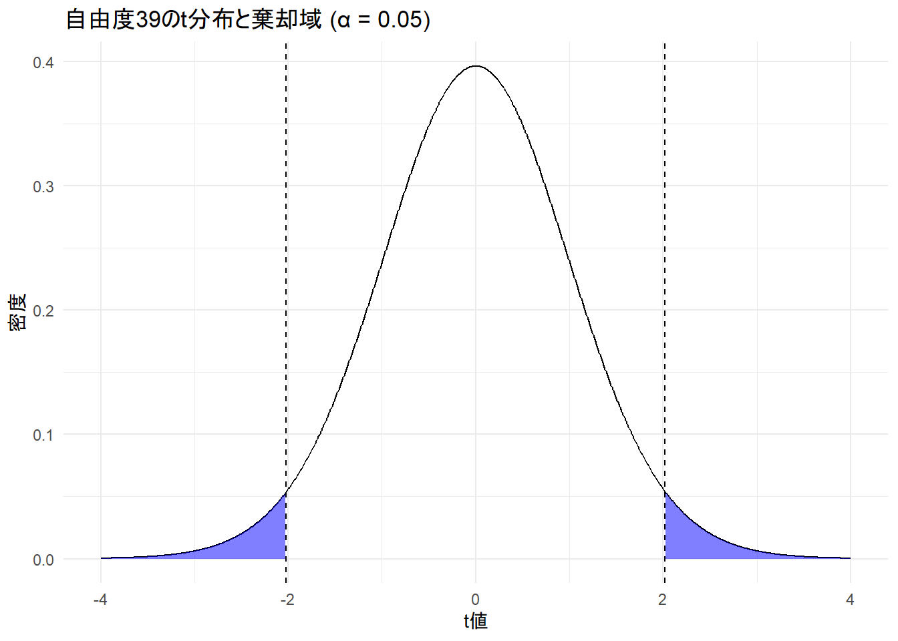
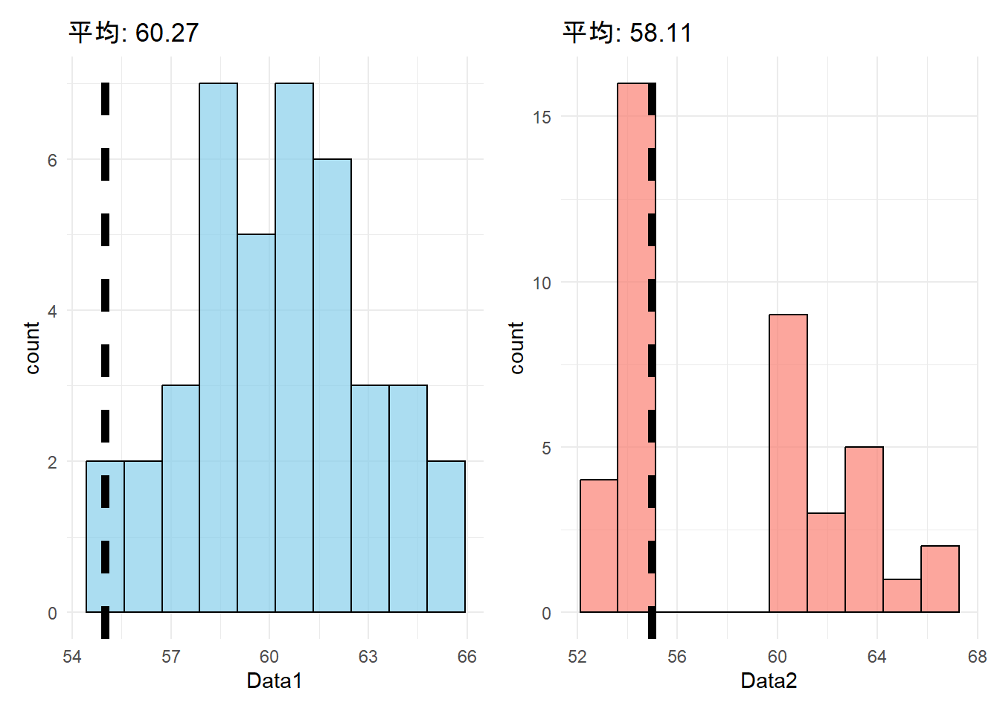
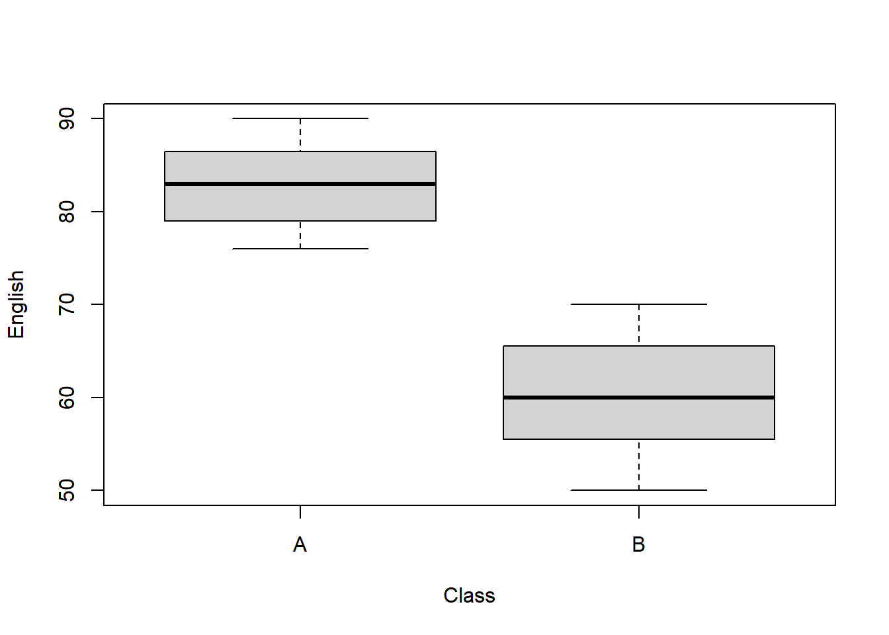
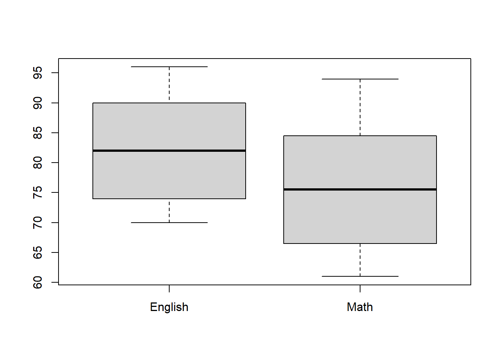

(60-55)/(3/sqrt(40))[1] 10.54093この講義のRプロジェクトを開いていますか？
英数字で名前を付けた本日の講義のファイルを作成しましたか？
母数についての推定（例「日本人の男子の平均身長は170 cmだ」）が合っているかを、統計学的に検定する
大別して2種類ある
母集団からサンプリングした標本から、母数についての推定が合っているかを議論できない。しかし、確率的な範囲であれば、推定が間違っているかを確かめることができる。
推測統計学における統計的検定の論理では、「母数についての等号（ = ）の仮説」が偽であることは言えるが、正しいとは言えない。
「母数の等号についての仮説」を帰無仮説（null hypothesis）と呼ぶ
帰無仮説は以下のように表す（Hはhypothesisの頭文字）[H_0: u = 170]
統計的検定では、帰無仮説が偽であるかを検定する。
背理法に似た方法であり、証明したい主張の否定の仮説を立て、得られた結果から主張できる結論が「矛盾」であることを示すことで、主張が正しいことを証明する。
対立仮説：帰無仮説の否定
[H_1: u ≠ 170]
帰無仮説が否定されれば、対立仮説が真となる
帰無仮説が偽であると判断できない場合、帰無仮説は保留になる（= 分からない）。
帰無仮説が正しいと仮定する。標本から計算された統計量の実現値が、標本分布から考えて十分低い確率でしか生じないような値であれば、帰無仮説が偽であると判断する
例： 2025年度にT先生のクラス（40人）で実施された英語テストの平均点は60点であった。昨年度の平均点は55点であり、2025年度の平均点は、昨年度の平均点に比べ十分に高い得点であるかを検定する。
[t = ]
[t = ]
(60-55)/(3/sqrt(40))[1] 10.54093qt(0.975, df = (40-1))[1] 2.022691
得られたt値は2.02よりも大きく、棄却域に入る。従って、帰無仮説が真であると考えると、非常に小さい確率でしか起きない結果が得られたという帰無仮説が真であるという仮定と矛盾した結果となっている。この場合、統計的に有意であると表現する。
2025年度の得点が昨年度よりも統計的有意に高いことは、全員の得点が昨年度よりも高いことを必ずしも意味しないということに注意。比較しているのはあくまでも平均点。以下のどちらのデータでも統計的有意差が得られる。
summary(data1) Min. 1st Qu. Median Mean 3rd Qu. Max.
55.00 58.33 60.27 60.16 62.08 65.36 summary(data2) Min. 1st Qu. Median Mean 3rd Qu. Max.
52.88 54.14 57.34 58.11 61.45 66.51 
母数について仮説を立てる。この母数は確率モデル（確率分布）のパラメータと対応しているという仮定が必要。
例えば、映画を見ると英単語の学習に効果的だということを調べる場合、映画を見る群と、映画を見ない群を用意する。二つの群の平均値の差が0でなければ、映画を見ることに何らかな効果があると主張できる。この場合、以下のような帰無仮説を立てる。
慣例的に言語研究の分野では5%が用いられる。
帰無仮説を偽とする場合でも、最大5%程度はそれが間違えている可能性を表す。
帰無仮説が正しいと仮定したときに、現在観察されたデータと同じか、より稀にしか起こらないようなデータが観察される確率
検定統計量を変換し、有意水準と比較しやすくしたもの
上記の手順では、検定統計量の実現値と棄却域の範囲を確認して、帰無仮説が棄却されるかを判断していた。しかし、コンピュータソフトウェアでは、p 値が表示され、この値が事前に設定した有意水準よりも大きいかもしくは小さいかを確認して棄却の有無を判断する。
t.test(df$Data1, mu = 55)
One Sample t-test
data: df$Data1
t = 12.351, df = 39, p-value = 4.691e-15
alternative hypothesis: true mean is not equal to 55
95 percent confidence interval:
59.31461 61.00448
sample estimates:
mean of x
60.15955 t.test(df$Data2, mu = 55)
One Sample t-test
data: df$Data2
t = 4.4932, df = 39, p-value = 6.106e-05
alternative hypothesis: true mean is not equal to 55
95 percent confidence interval:
56.70752 59.50353
sample estimates:
mean of x
58.10553 e-やe+は指数的記法。6.106e-05であれば、6.106 × 10^(-5)なので、0.を合わせて0が5つ6の前につく。6.106e+05であれば6.106 × 10^5。Rではoptions関数で通常の値に戻して表示可能。
options(scipen = 999)
t.test(df$Data2, mu = 55)
One Sample t-test
data: df$Data2
t = 4.4932, df = 39, p-value = 0.00006106
alternative hypothesis: true mean is not equal to 55
95 percent confidence interval:
56.70752 59.50353
sample estimates:
mean of x
58.10553 第一種の誤り（type Ⅰ error）
帰無仮説が真なのに、誤って偽だと主張すること（本当は差がないのに差があると判断する）
有意水準 α の値と一致
第二種の誤り（type Ⅱ error）
帰無仮説が偽なのに、それを偽であると言えない（保留）すること（本当は差があるのに差がないと判断する）
β で表す

検出力（power）
帰無仮説が偽であるとき、正しく帰無仮説を棄却できる確率
1 - β で表す
統計的検定では、α を維持しながら検出力を高くするのが望ましい
大きい効果ほど、大きい標本サイズほど、統計的有意を検出しやすくなる
有意水準を小さくすると、第二種の誤りが大きくなる = α を小さくすると、β は大きくなる
帰無分布と真の母数の標本分布が離れるため、検出力は、帰無仮説と母平均の差が大きいほど、標本サイズが大きいほど大きくなる。
サンプルサイズ・検定力・有意水準に加え、効果量（effect size）も連動している。効果量は後の講義で詳しく扱うが、簡単に説明すると、関心を持つ事柄の大きさである。4つのうち、3つが分かれば、自動的に残りの1つの値を特定できる。これを利用したのが検定力分析（power analysis）である。これを実験前に使うことで、どれくらいの標本を収集すべきかを検討できる。近年の研究では、参加者の数を検定力分析で決めているかを重視する（査読で！）動きがある。
有意確率（ p < 0.05）だけに結果の解釈を頼るのはよくない
無作為抽出を前提としていても、必ず得られた結果に誤差が含まれている
標本サイズに大きく左右される
統計的検定における誤差と問題点の対処法
ここまで説明してきた話 + この講義のほとんどの説明における統計学は、頻度論的統計学（frequentist statistics）と呼ばれる枠組み。
検定において用いる数学的手法が異なる。頻度 vs. ベイズのような「主義の違いによる対立構造」は避けた方がよい
母集団からサンプリングする（標本を抽出する）のは繰り返すことができる試行において起こる事象の相対頻度（frequency）をもとに行われる。例えば、サイコロを14回降って、1の目が3回出た場合、1が出る確率は \(\frac{3}{14}\) になる。これを頻度論的確率と呼び、人間の主観や信念に依存しない客観的な確率である。
確率とは無限回試行を行ったときの割合
仮説の評価を p 値を用いて行う
データを追加して再度分析する際、、適切な方法を用いないと、計算されたp 値と有意水準が当初の値から変わってしまう（検定力分析が重要な理由）
ベイズ統計学では、主観確率（「明日は30%で晴れるだろう」）と客観確率（「10日3日晴れたから明日は晴れるだろう」）の両方を検定に使用する。
ベイズ統計学では p 値は使わない
ベイズ統計では、データを追加して再度分析することはOK（データの二度漬けをしない限り）
頻度論的統計学、ベイズ統計学どちらにおいても、「無作為抽出により標本が母集団を代表している」「母集団からのサンプリングを近似していること」という前提が重要
t 分布に照らし合わせて、2群の平均値の差を検証する場合に用いる。
対応あり（repeated measures）：同じ参加者からの2種類のデータ（例 同じ参加者の国語と英語の点数）
対応なし（independent measures）：異なる参加者からなる2種類のデータ（例 1年生と2年生の英語の点数）
重要
正規性の検定や等分散性の検定を行うことを推奨されることがあるが、このような事前テストは第一種&第二種の過誤の確率を高めることが報告されている（e.g., Rasch et al. [2011]）。そのため、そのような検定を行わず、ウェルチのt 検定を行う方がよい。
t 検定は、その誤差が偶然にしてはどの程度大きいかを調べる検定
標本平均の標本誤差：差がどれだけ偶然の誤差によって起きるかを推定
t 値を求めて、設定した有意水準と自由度（ df : Degree of Freedom）から、 t 値の棄却域を求める。求めた値より t 値が大きければ、帰無仮説を棄却する。
[t = ]
[ t = (df = n_1 + n_2 - 2) ]
[ s_p^2 = ]
[ t = ]
[ t = (df = n - 1) ]
dat_t_ind <- read.csv("sample_data/ttest_inde.csv")head(dat_t_ind) ID Class English
1 1 A 85
2 2 A 78
3 3 A 90
4 4 A 82
5 5 A 88
6 6 A 84length(table(dat_t_ind$ID))[1] 80boxplot(English ~ Class, data = dat_t_ind)
library(psych)
Attaching package: 'psych'The following objects are masked from 'package:ggplot2':
%+%, alphadescribeBy(dat_t_ind$English, group = dat_t_ind$Class)
Descriptive statistics by group
group: A
vars n mean sd median trimmed mad min max range skew kurtosis se
X1 1 40 83.03 4.3 83 83 5.93 76 90 14 0.01 -1.25 0.68
------------------------------------------------------------
group: B
vars n mean sd median trimmed mad min max range skew kurtosis se
X1 1 40 60.48 5.73 60 60.44 7.41 50 70 20 0.05 -1.25 0.91t.test(English ~ Class, data = dat_t_ind)
Welch Two Sample t-test
data: English by Class
t = 19.911, df = 72.353, p-value < 0.00000000000000022
alternative hypothesis: true difference in means between group A and group B is not equal to 0
95 percent confidence interval:
20.2925 24.8075
sample estimates:
mean in group A mean in group B
83.025 60.475 論文記載例
* 本来であれば、効果量も報告する必要があるが、今回は省略している。
p 値は原則実数値報告である（ p = .046）。しかし、値が0.01よりも小さい場合は、p < .001のように報告する。
dat_t_rep <- read.csv("sample_data/ttest_rep.csv")head(dat_t_rep) ID English Math
1 1 85 78
2 2 88 82
3 3 90 85
4 4 92 89
5 5 87 83
6 6 91 86length(table(dat_t_rep$ID))[1] 40boxplot(dat_t_rep$English, dat_t_rep$Math, names = c("English", "Math"))
describe(dat_t_rep$English) vars n mean sd median trimmed mad min max range skew kurtosis se
X1 1 40 82.22 8.65 82 82.16 11.86 70 96 26 0.04 -1.67 1.37describe(dat_t_rep$Math) vars n mean sd median trimmed mad min max range skew kurtosis se
X1 1 40 75.85 10.02 75.5 75.56 13.34 61 94 33 0.15 -1.47 1.59paired = Tを設定するt.test(dat_t_rep$English, dat_t_rep$Math,
paired = T
)
Paired t-test
data: dat_t_rep$English and dat_t_rep$Math
t = 21.641, df = 39, p-value < 0.00000000000000022
alternative hypothesis: true mean difference is not equal to 0
95 percent confidence interval:
5.779151 6.970849
sample estimates:
mean difference
6.375 論文記載例
* 本来であれば、効果量も報告する必要があるが、今回は省略している。
小テストに向けて今回の内容を復習する。必ず手でコードを入力してRを実行する。
配布されたデータセット（pokemon_data_ttest.csv）をもとに、任意のデータに対してt 検定を行い、その解釈を本講義内で確認した書き方報告する。また、データの中身の確認や記述統計、データの可視化なども含めること。